Pet gallery
The pet gallery
Dogs, cats, adopters, and rescues from over the years. Every one of them mattered. Tap any photo to see it big.
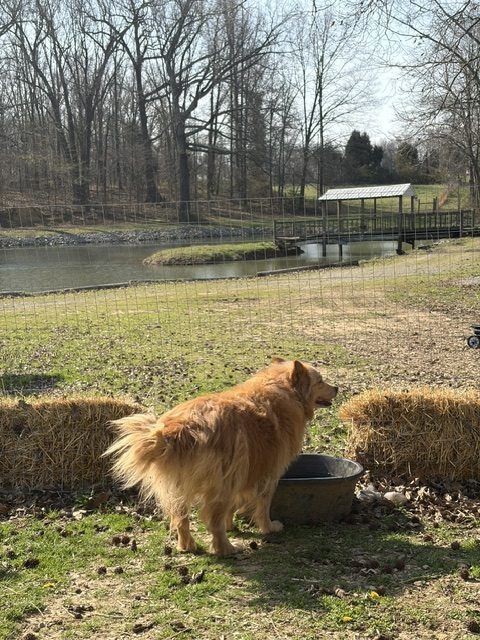

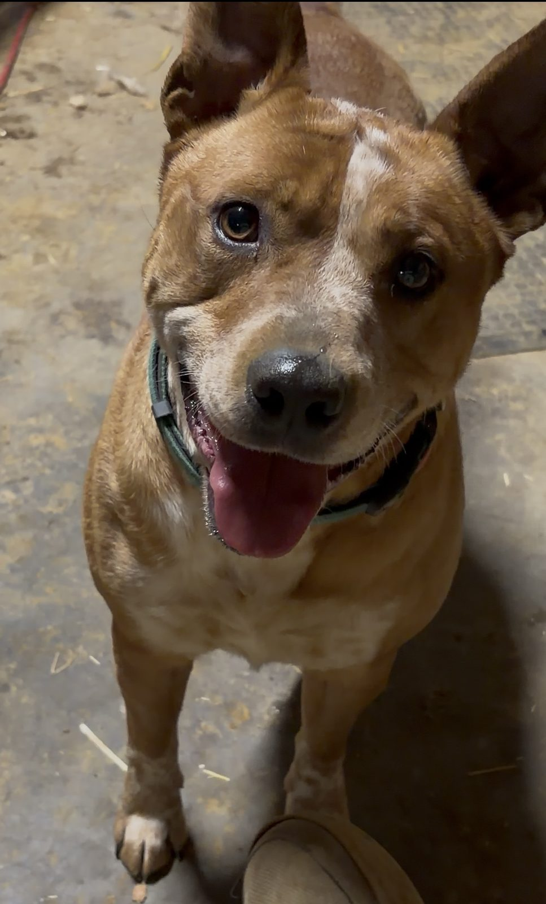
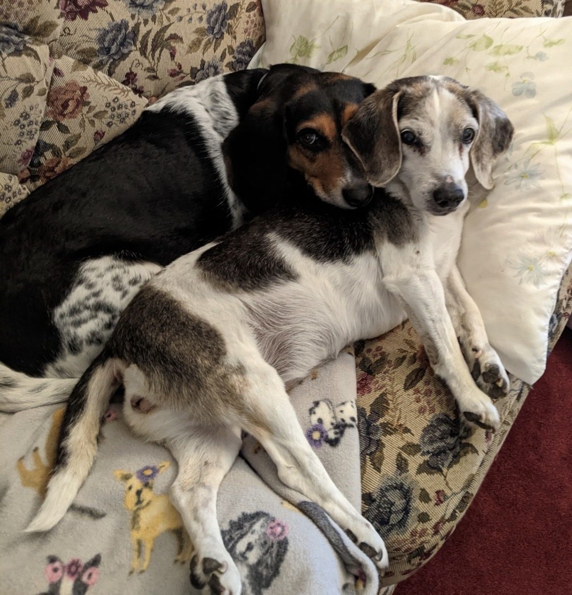
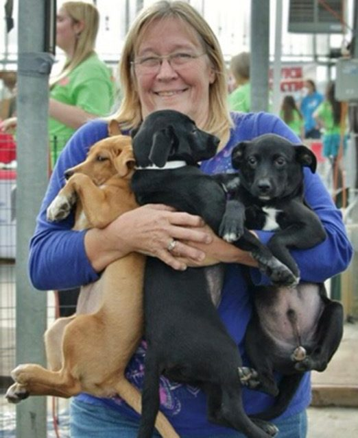
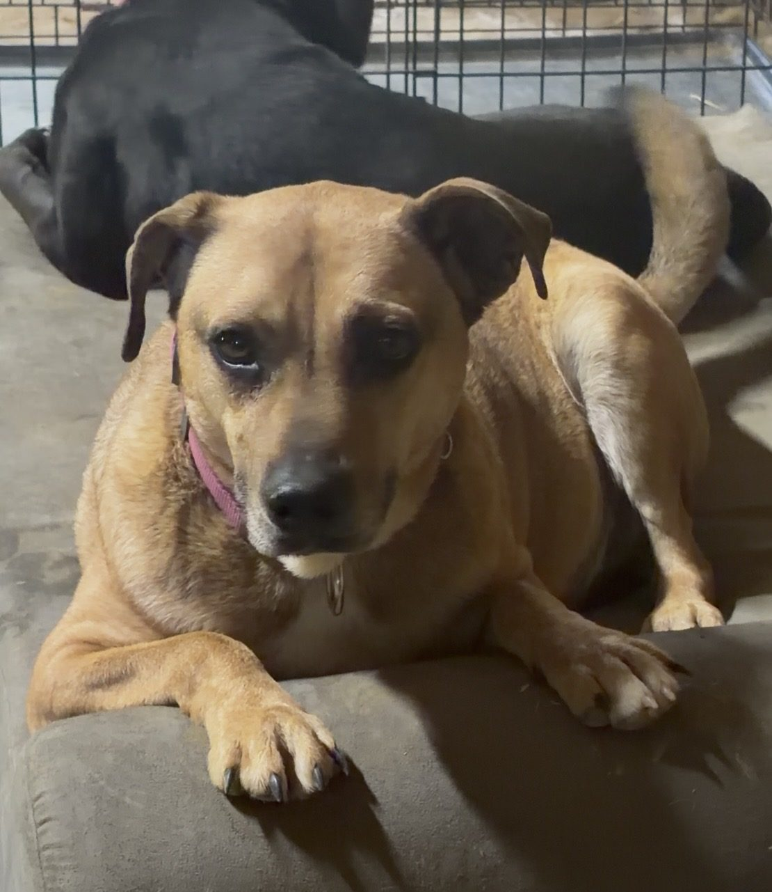
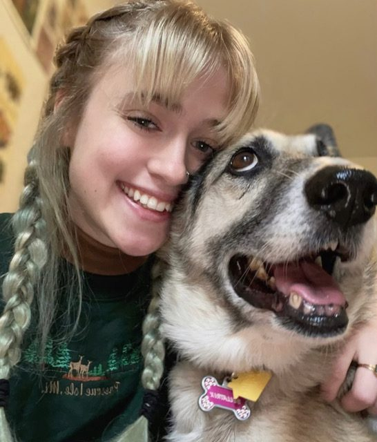
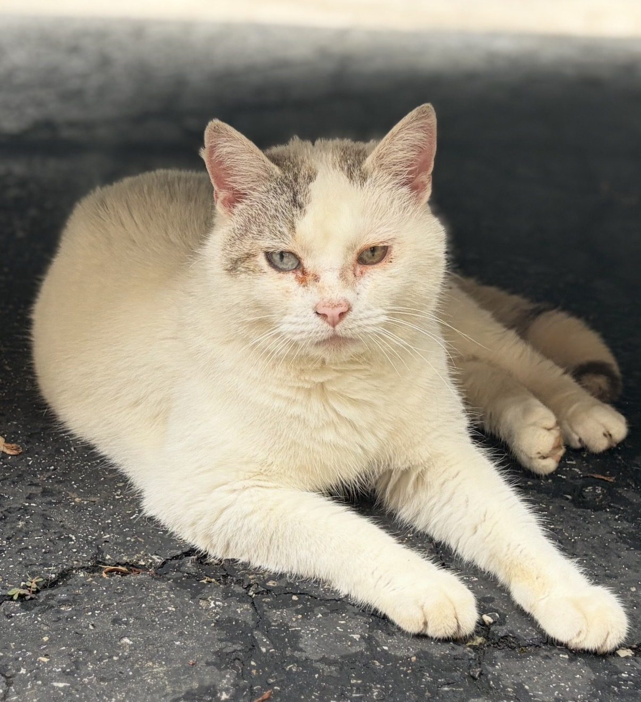
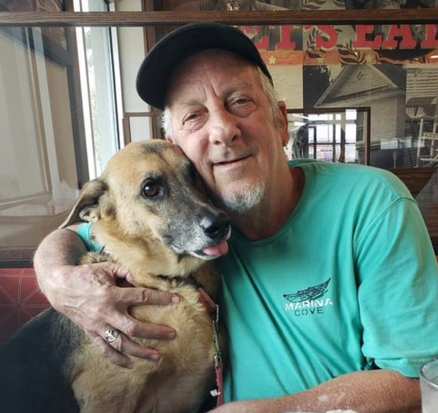
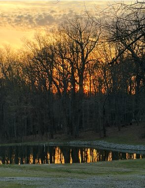
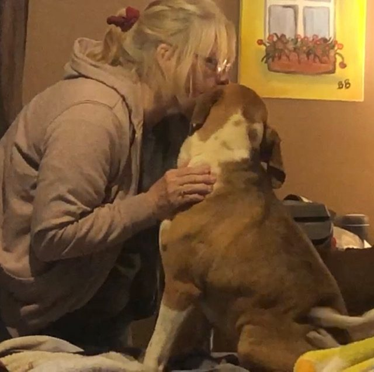
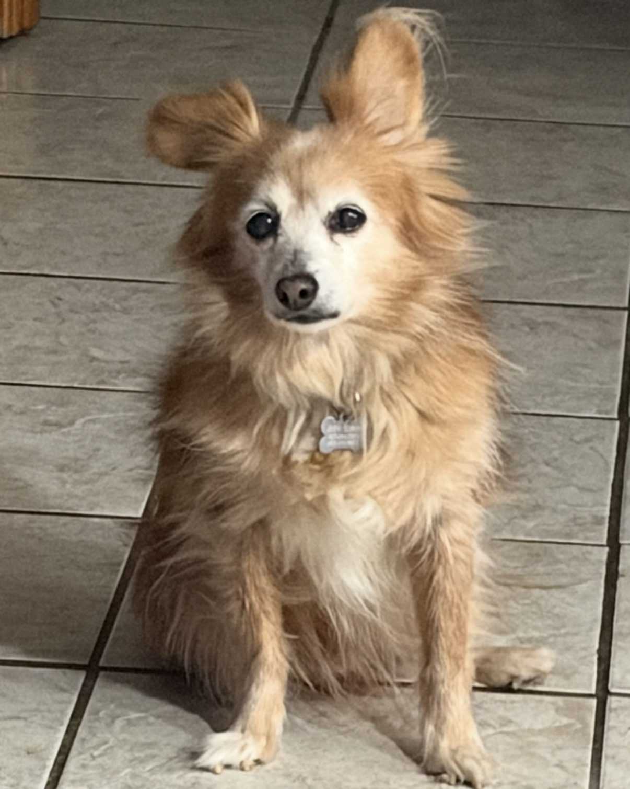
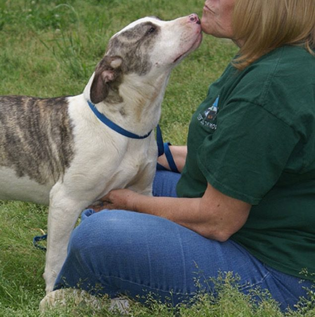
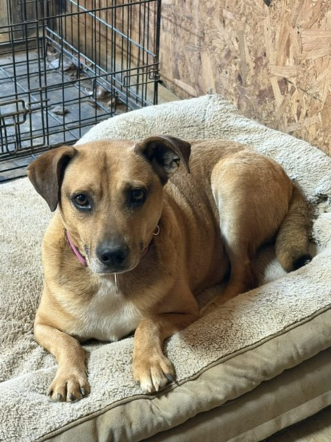

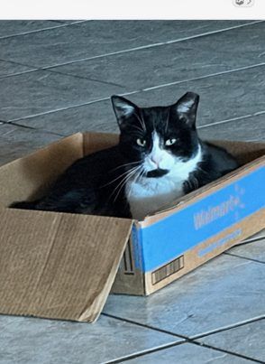
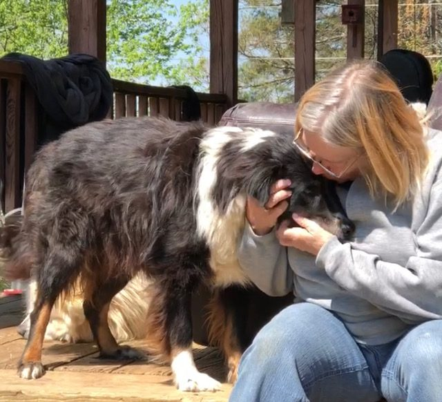
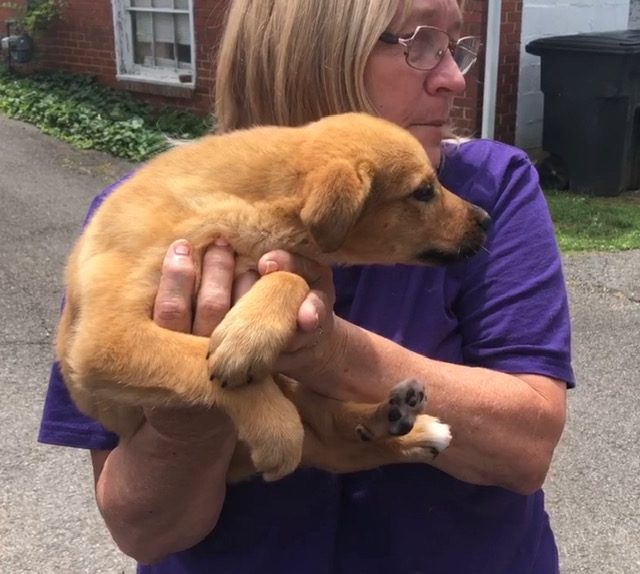
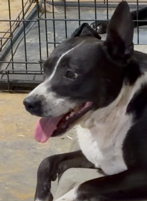
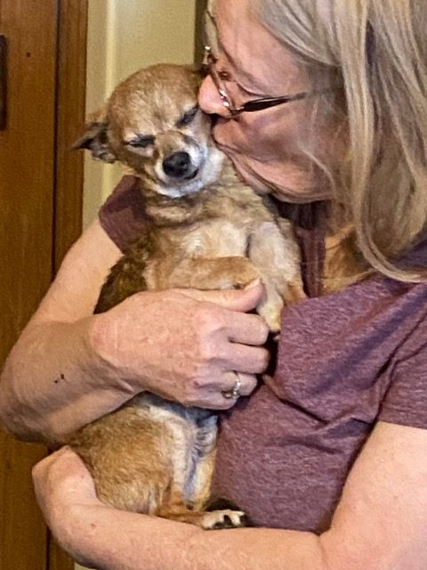
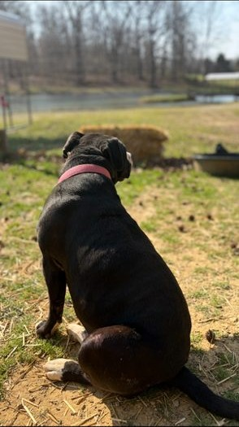
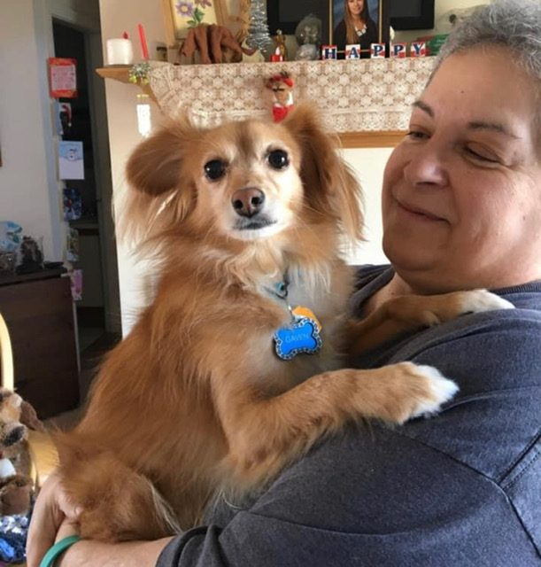
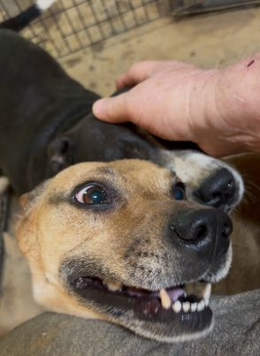
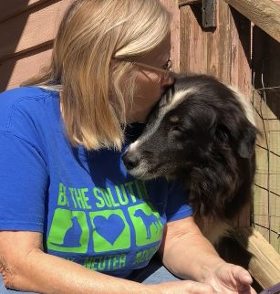
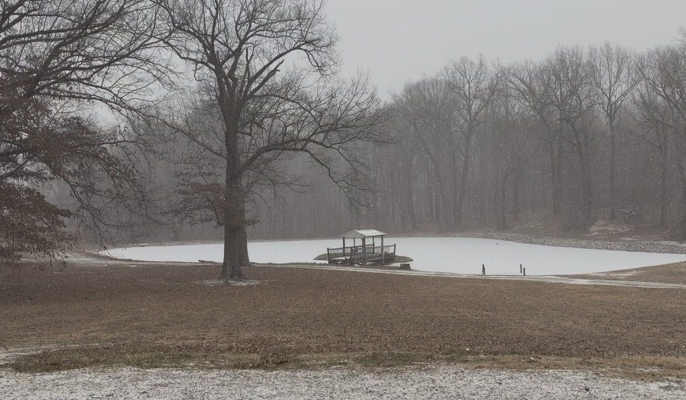
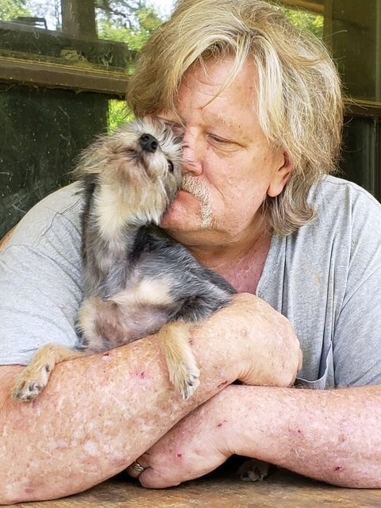
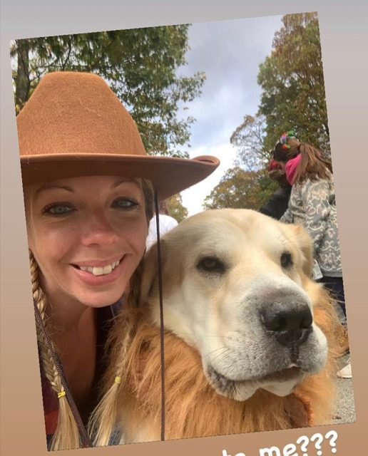


In loving memory
Perry
Forever part of the pack.
Sherri
Loved every day. Missed every day.
From the archives
Photos from the original Baker Bridge Rescue site, going back years.